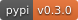

AI-on-Demand - obtain and share AI resources with ease
- quick instantiation of AI models from string IDs across the ecosystem
- cross-platform metadata catalogue for papers, projects, datasets, models
- marketplace features for sharing models and assets (under development)
A web interface for assets is available through the AIoD catalogue and the Metadata Catalogue Editor (under construction)
| Overview | AIoD Homepage · Tutorials · Release Notes |
|---|---|
| Open Source | |
| Community | |
| CI/CD | |
| Code |  |
Installation
Install from PyPI via:
Quick start
AI model instantiation
Also see the AI model instantiation tutorial
aiod.get(id: str) is the key entry point:
idis a unique string describing a model- return is the python object, or an exception informing the user of required dependencies
directly constructs the random forest from scikit-learn
Works across the ecosystem!
... constructs the XGBClassifier, or raises an informative error message to
install xgboost in the environment (if not available)
Complex pipelines and composites are supported out-of-the-box:
spec = """
pipe = Pipeline(steps=[
("imputer", SimpleImputer(strategy="mean")),
("scaler", StandardScaler()),
("classifier", RandomForestClassifier(n_estimators=100))])
cv = KFold(n_splits=5, shuffle=True, random_state=42)
return GridSearchCV(
estimator=pipe,
param_grid=[{
"classifier__max_depth": [5, 10],
"classifier__min_samples_split": [2, 5],
},
],
cv=cv,
)
"""
get(spec)
- no more hassle with import statements!
- share your AI model specs as easy-to-handle strings!
Indexed libraries
The following libraries are indexed - the scope is expanding, roadmap contributions are welcome!
scikit-learn tabular estimators
scikit-learncatboostfeature-enginelightgbmimbalanced-learnmlxtendscikit-legoxgboost
Probabilistic supervised learning and survival modelling
skpro
Time series, forecasting
sktime
AI asset catalogue search
Also see the AI metadata catalogue tutorial
You can directly access endpoints through the Python API, for example to browse datasets:
And results will be returned as a Pandas dataframe (though thedata_format may be used to get JSON instead):
platform platform_resource_identifier name date_published same_as is_accessible_for_free ... relevant_link relevant_resource relevant_to research_area scientific_domain identifier
0 huggingface acronym_identification acronym_identification 2022-03-02T23:29:22 https://huggingface.co/datasets/acronym_identi... True ... [] [] [] [] [] 1
...
9 huggingface allegro_reviews allegro_reviews 2022-03-02T23:29:22 https://huggingface.co/datasets/allegro_reviews True ... [] [] [] [] [] 10
[10 rows x 30 columns]
You can even query the elastic search endpoints:
platform platform_resource_identifier name date_published same_as is_accessible_for_free ... relevant_resource relevant_to research_area scientific_domain type identifier
0 robotics4eu 1803 Responsible Robotics & non-tech barriers t... None https://www.robotics4eu.eu/publications/respon... None ... [] [] [other materials] [other materials] None 4
[1 rows x 36 columns]
Contributing
Interested in contributing? Check out the contributing guidelines, then start with the Developer Setup Guide to set up your local development environment. Check out the complete documentation here: https://aiondemand.github.io/aiondemand/developer_setup By contributing to this project, you agree to abide by our Code of Conduct.
Credits
The aiondemand package is being developed with funding from EU’s Horizon Europe research and innovation program under grant agreement No. 101070000 (AI4EUROPE).
Not all contributors are affiliated with this funding.
cookiecutter and the py-pkgs-cookiecutter template were used to create the repository structure.